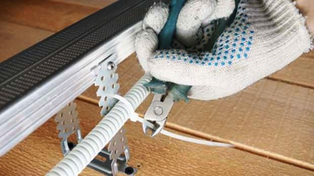
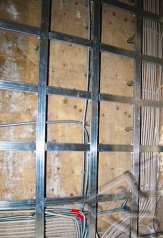
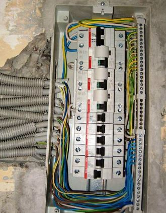
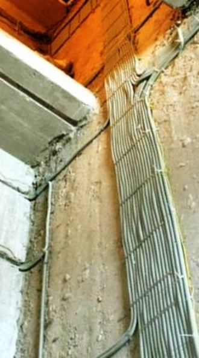

Качественный электромонтаж в Санкт-Петербурге и ленобласти, стаж 12 лет. Частный электрик, недорого и качественно.
Тел. 8 904 642 08 57 Николай.
Николай.

Проводка в новой квартире.
Основные моменты монтажа проводки в новой квартире. Если Вас интересует данный вопрос, обращайтесь по телефону, и я отвечу на вопросы.
Кстати, возможна помощь при закупке материалов и составлении схемы.
Цены посмотрите ниже, позвоните!
Покупка новой квартиры – это, с одной стороны, радостное событие, а с другой, хлопотное. Необходимо дополнительный ремонт, устранение мелких недоделок, корректировка или полная замена электропроводки. На последнем моменте хотелось бы остановиться более подробно.
Мастер по электромонтажу в новой квартире.
Зовут меня Николай, я частный электрик 4 го разряда с опытом работы 15 лет.
За это время мною было выполнено достаточно успешных проектов, как в СПБ, так и в Ленинградской обл.. Работаю, преимущественно, с постоянными клиентами, хотя, рад и новым. В работе руководствуюсь принципом: «Высокое качество при доступной цене». Имею все необходимые для проводки с высокочастотными линиями допусками, есть лицензии.
Главным условием работ по коррекции или замене проводки в новом помещении является соблюдение всех требований СНиП и ТУ. Выполнять данные услуги может мастер, имеющий специальную квалификацию (минимум 4 - й разряд и допуск в проводке на линях 1 000 Вт).
Сколько стоит прокладка проводов в новой квартире?
Электромонтаж однокомнатной квартиры под ключ. |
32000 руб. |
Двухкомнатной квартиры. |
40000 руб. |
Трёхкомнатной. |
48000 руб. |
Четырехкомнатной. |
55000 руб. |
Электромонтаж в кухне. |
8000 руб. |
Главным условием успешного выполнения электромонтажа в новом помещении является наличие схемы электромонтажа. Если ее нет, все работы выполнены вслепую, а это недопустимо. Такое встречается довольно редко, но если вдруг и возникла такая ситуация, то специалист высокой квалификации, основываясь на опыте и знаниях, сможет составить ее самостоятельно и проверить экспериментальным путем.
Основные требования, которые предъявляются к схеме монтажа – безопасность, удобство в эксплуатации и полное соответствие всех требованиям СНиП.
Сколько нужно розеток в новой квартире.
Основное правило следующее – одна розетка на каждые 6 м. На кухне их может быть до трех, а вот в ванной комнате и туалете их быть не должно. И еще, нельзя производить монтаж розеток возле кухонных плит, труб и раковин. Обязательная дистанция – 50 см. Со своей стороны рекомендую приобретать винтовые розетки, которые в отличие от пружинных более надежны и долговечны.
Укладка проводов в новой квартире.
Проводка в новой квартире должно быть выполнена в соответствии с некоторыми правилами и одно из них гласит, что протягивать электропровода можно под прямым углом, то есть строго вертикально или горизонтально! При этом необходимо соблюдать дистанцию в 10-12 см от окон, дверей и углов помещения. При прокладке проводов вблизи труб водоснабжения или отопления, их защищают специальными прокладками.
А как быть с техникой?
Современные квартиры буквально «напичканы» электроприборами. Для особо дорогого и объемного оборудования необходимо выделить отдельную линию электропитания. Ее, я бы рекомендовал, снабдить отдельным предохранителем. Пусть это получится несколько дороже, но надежнее.
Не обойтись в новой квартире и без монтажа слаботочных сетей: радио, кабельное телевидение, телефон, интернет и др. Кабеля укладывают обычно в гибких трубах, во избежание повреждений. Выбор таких кабелей сегодня огромен, однако, не стоит покупать самые дешевые провода. Это экономически невыгодно, да и опасно.



Сколько будут стоить материалы.
Расценки на электропроводку.

Замена электропроводки в двухкомнатной квартире?.
